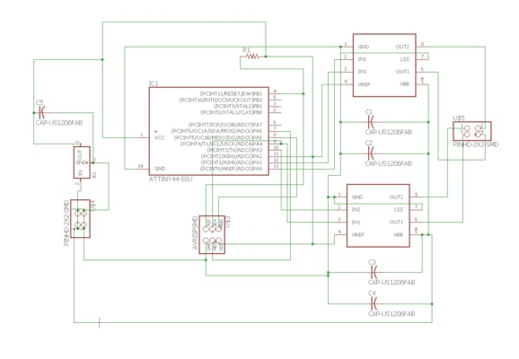
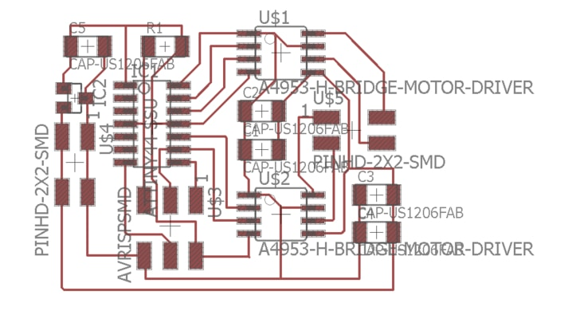
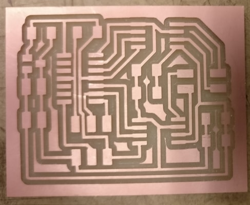
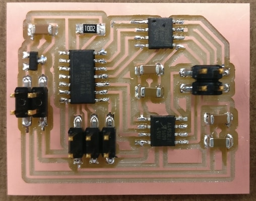
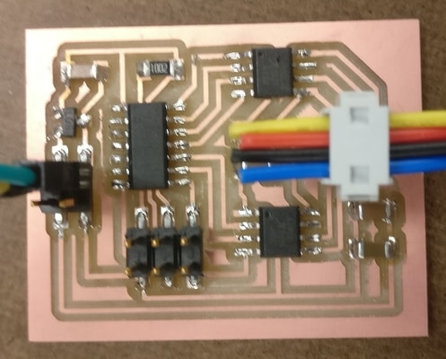
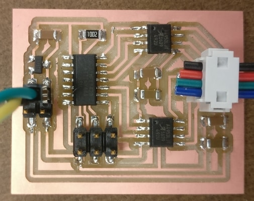
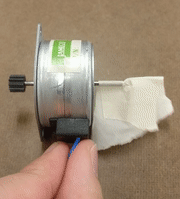

For this week, I definitely wanted to do something with stepper motors. My final project will involve making an X-Y Plotter. So this week, I learn how to program a stepper motor. I follow the guidelines at output devices to get started.
I decide to follow a template for the bipolar stepper motor. At the time of the decision I had no idea what that meant. The first step is to recreate the board in Eagle.
 Using the milling machine is straightforward now.
So is soldering the components.
Tough part of this week is figuring out the wiring for the stepper motors and getting it to program. So it turns out the lab didn't have a bipolar stepper motor, only unipolar stepper motars. I learned that I could use the same board to use the unipolar stepper motor. I ended trying to use two different types from Jameco.
Some things that took longer than it should have was how to get the power source to output the correct voltage and getting avrdude to work. For a while I was able to get the board to program, but the motors weren't working. Turns out I needed to up the voltage.
Wiring for small motor 2138812.
Wiring for bigger motor 238538.

Here are my files if you are interested.
traces.png
outline.png
eagle.brd
Here they are in motion.
{kind=link}
{kind=link}